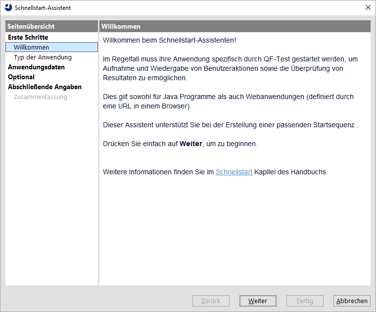
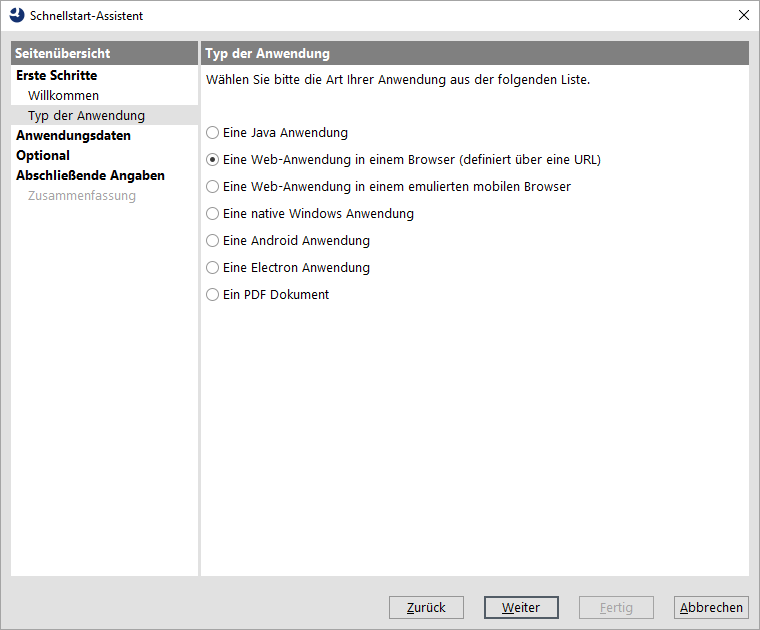
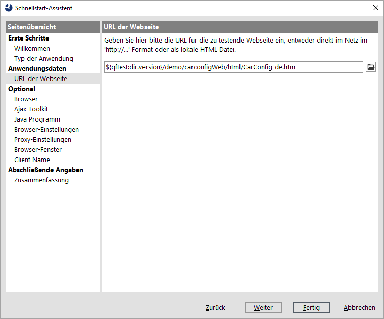
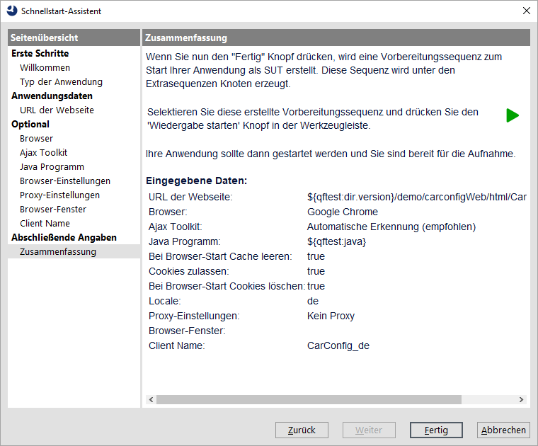
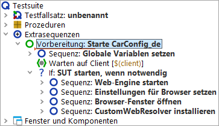
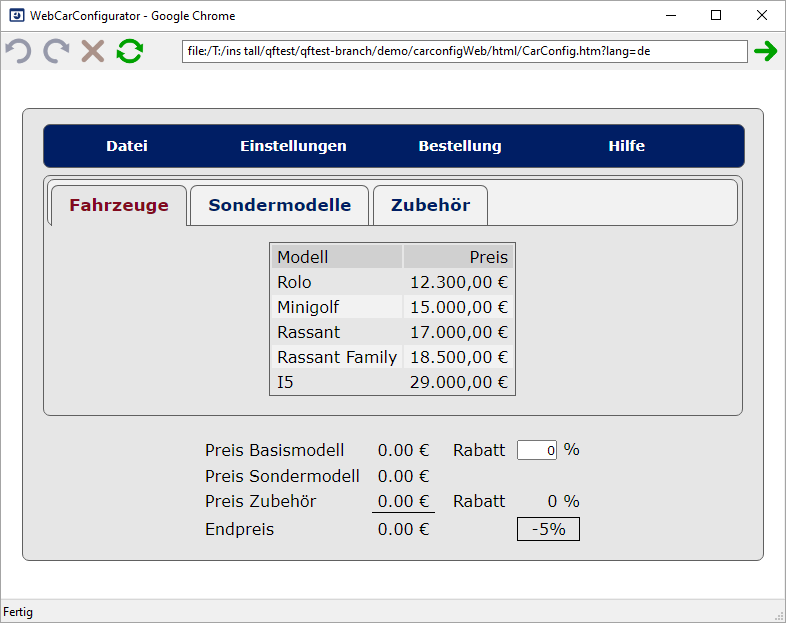

| Version 6.0.3 |
Zu Beginn muss die zu testende Anwendung aus QF-Test heraus gestartet werden. Es gibt einen Schnellstart-Assistenten, der uns hilft, eine passende Startsequenz zu erzeugen.
Der Assistent startet mit einem Willkommen und allgemeinen Informationen.
|
|  | ||
|
| Abbildung 11.1: Der Schnellstart-Assistent | ||
Im zweiten Schritt werden Sie dazu aufgefordert, die Art der zu testenden Applikation auszuwählen.
|
|  | ||
|
| Abbildung 11.2: Auswählen der SUT Art | ||
Im dritten Schritt wird nach der URL der zu testenden Webseite gefragt.
Typischerweise gibt man hier eine http(s) basierte URL an. Wir werden jedoch die lokal abgespeicherte CarConfigWeb Demoseite benutzen.
.../qftest-6.0.3/demo/carconfigWeb/html in Ihrer QF-Test
Installation.
CarConfig.htm
HinweisIm Bild sieht man eine weitere Möglichkeit: Die Verwendung der Variablen
${qftest:dir.version} am Beginn, die automatisch zum versionsspezifischen
Installationsverzeichnis von QF-Test expandiert. Details zu speziellen QF-Test Variablen findet
Sie im Handbuch Kapitel Variables.
|
|  | ||
|
| Abbildung 11.3: Auswahl der Programm Datei | ||
Hinweis Für den verwendeten Browser bedeutet das, dass der Standardwert gewählt wird (Chrome für Windows und macOS, Firefox für Linux). Sollte dies bei Ihnen aus irgendwelchen Gründen nicht passen, nutzen Sie den optionalen nächsten Schritt im Assistenten um einen anderen Browser anzugeben.
Wir gelangen direkt zur Zusammenfassung, die beschreibt, wie es nach dem Beenden des Schnellstart-Assistenten weiter geht.
|
|  | ||
|
| Abbildung 11.4: Zusammenfassung | ||
Die generierte Startsequenz erscheint in den "Extrasequenzen" der Testsuite und ist äquivalent zu der, die wir bereits aus dem letzten Kapitel kennen (Abschnitt 10.2).
|
|  | ||
|
| Abbildung 11.5: Generierte Startsequenz | ||
Probieren wir sie aus:
Nach kurzer Zeit sollte ein Browser-Fenster erscheinen. Zuerst wird eine Seite gezeigt, die dann zum CarConfig Demo weiterleitet.
|
|  | ||
|
| Abbildung 11.6: Das WebCarConfigurator Demo im Browser | ||
Am Ende dieses Abschnitts wollen wir unsere Testsuite speichern.
Dokumente in Ihrem Benutzerverzeichnis.
MeineErstenTests.qft.
| Letzte Änderung: 6.9.2022 Copyright © 2002-2022 Quality First Software GmbH |